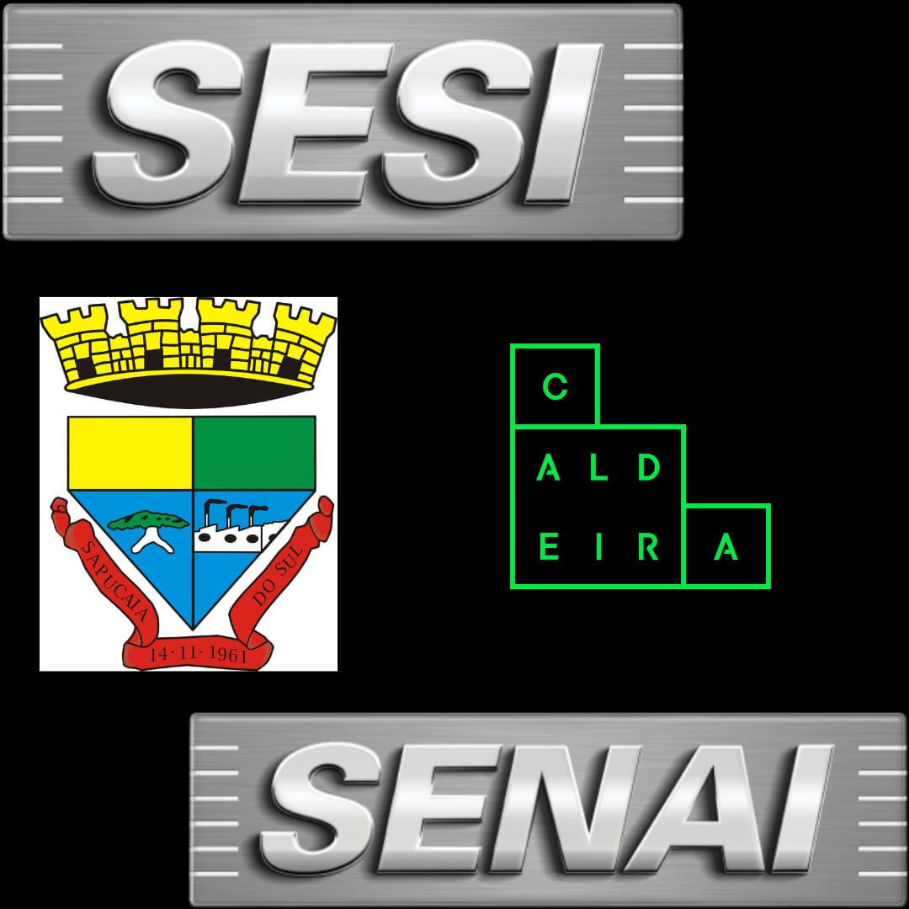

Vida Acadêmica
Estudei em escola pública durante meu Ensino Fundamental inteiro, na escola Marechal Bittencourt onde participei de feiras de ciência desde 2012, em 2019 entrei para o grupo de Interlocutores Ambientais da escola onde palestrei sobre cuidados com o meio ambiente e conheci mais sobre como funciona a educação para crianças e adolescentes. No Ensino Médio entrei na escola SESI com Bolsa 100% em turno integral onde tive mais contato com o mundo da tecnologia como a iniciação científica e a robótica. Em parceria do SESI com o SENAI iniciei o curso profissionalizante de Elétrica Industrial com Ênfase em Automoção pelo SENAI.
